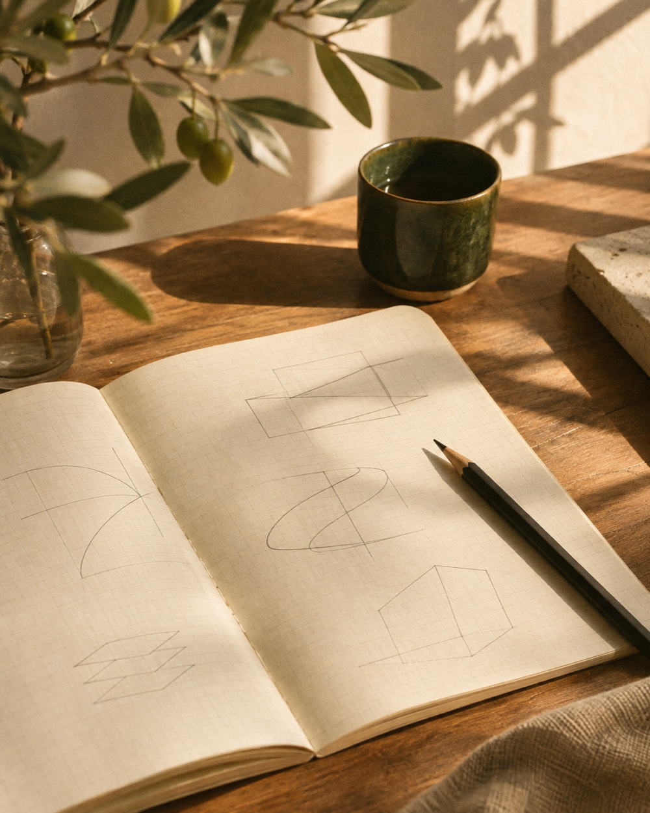

Webサイト
喫茶 mado
街の小さな喫茶店を想定したサイト。メニュー、営業時間、アクセスをスマートフォンでも見つけやすく整理しました。

ABOUT
Webサイトの構成や文章を考え、デザインから実装まで手を動かしています。最近は、小さなお店の情報を届けるサイトや、日々の作業を軽くするツールを試作しています。
WORKS
活動内容・制作例は仮の内容です
Webサイト
街の小さな喫茶店を想定したサイト。メニュー、営業時間、アクセスをスマートフォンでも見つけやすく整理しました。
Webツール
思いついたことを一行ずつ残せるメモツール。入力欄とメモの一覧をひとつの画面にまとめました。
デザイン
港で開く週末マーケットの告知デザイン。出店情報と会場の案内を、ポスターとSNS用画像に展開しました。